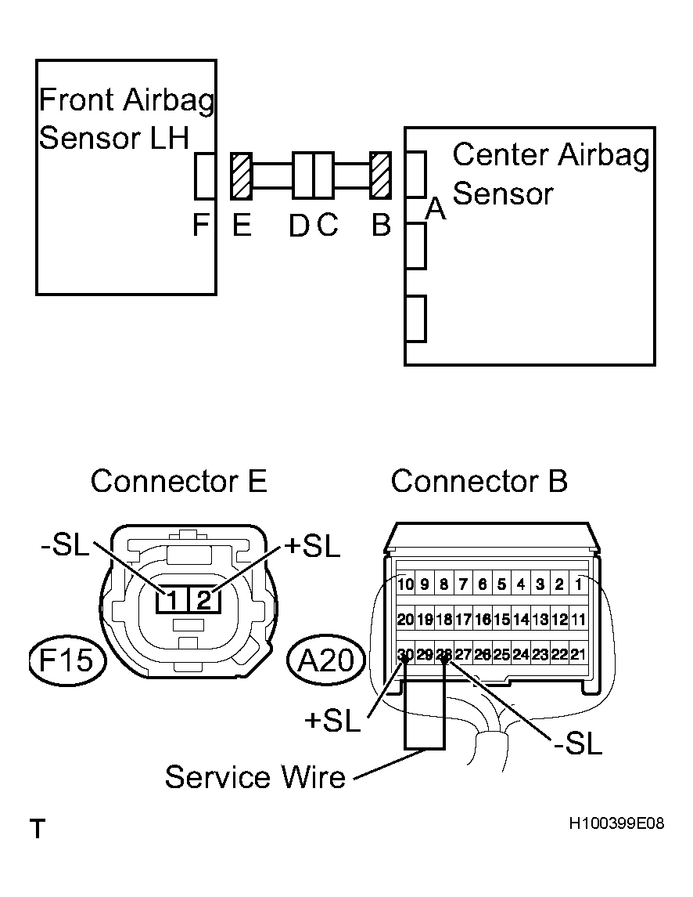
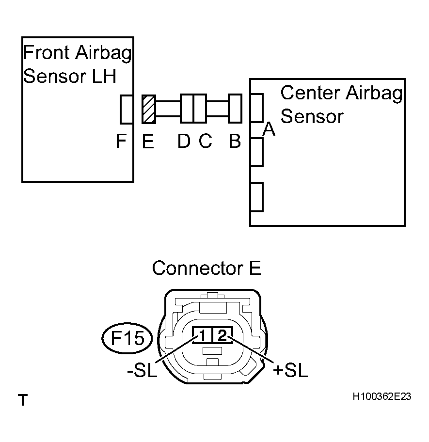
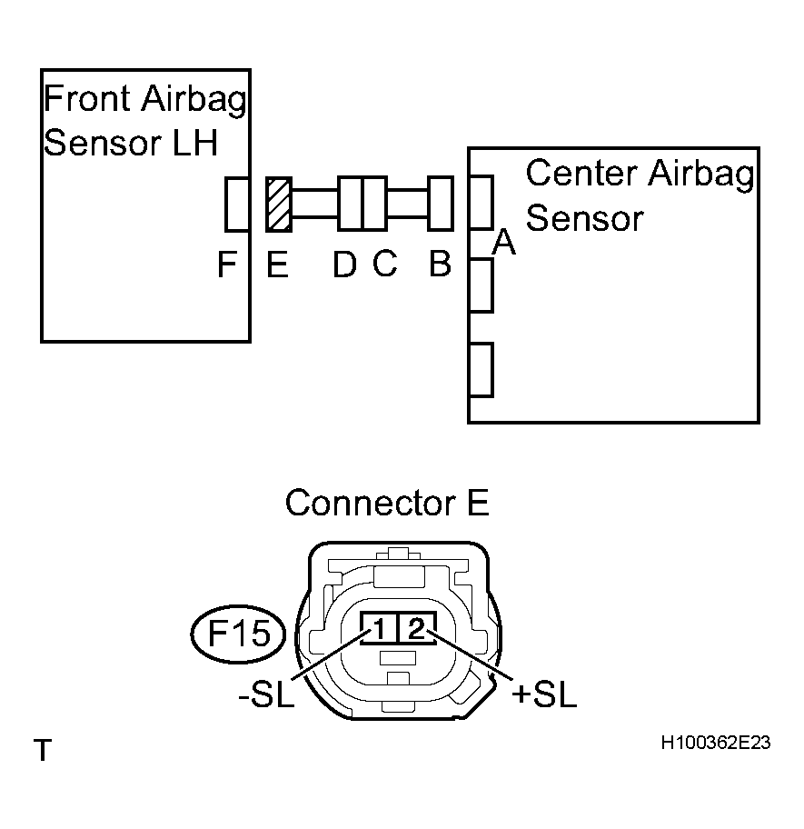
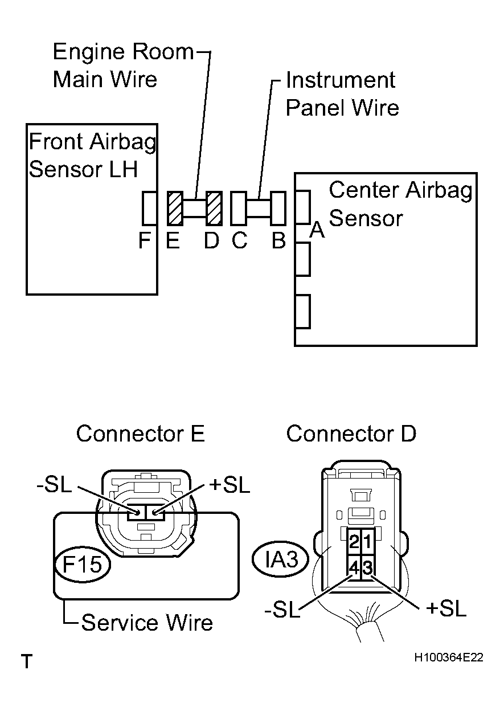
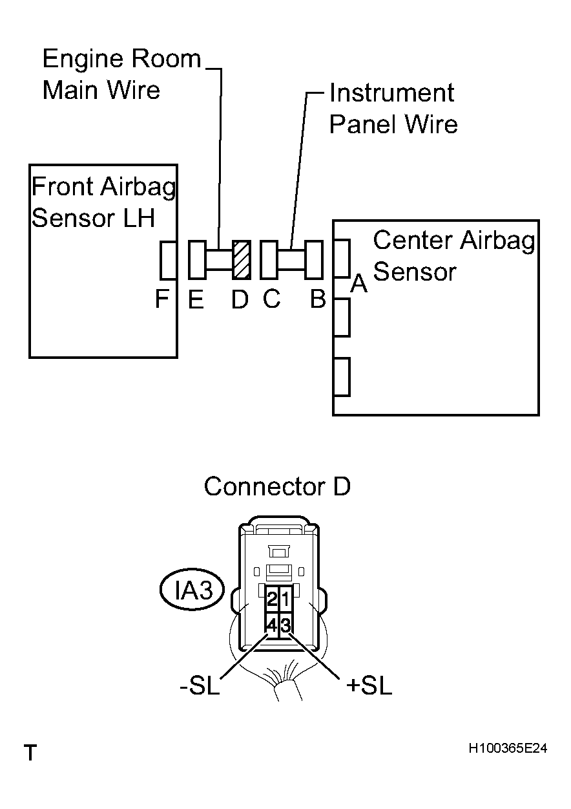

Inspection Procedure
- CHECK FOR DTC
- Turn the ignition switch ON, and wait for at least 60 seconds.
- Clear the DTCs stored in memory (see DTC CHECK / CLEAR ).
- Turn the ignition switch OFF.
- Turn the ignition switch ON, and wait for at least 60 seconds.
- Check for DTCs (see DTC CHECK / CLEAR
).
OK:
DTC B1615/14 is not output.
HINT:
DTCs other than DTC B1615/14 may be output at this time, but they are not related to this check.
OK : USE SIMULATION METHOD TO CHECK
NG : Go to Next Step
- CHECK CONNECTION OF CONNECTOR
- Turn the ignition switch OFF.
- Disconnect the cable from the negative (-) battery terminal, and wait for at least 90 seconds.
- Check that the connectors are properly connected to the center airbag sensor and front airbag sensor LH.
OK:
Connectors are connected.
NG : CONNECT CONNECTOR
OK : Go to Next Step
- CHECK FRONT AIRBAG SENSOR LH CIRCUIT (OPEN)
- Disconnect the connectors from the center airbag sensor and front airbag sensor LH.
- Using a service wire, connect terminals A20-28 (-SL) and A20-30 (+SL) of connector "B".NOTE: Do not forcibly insert a service wire into the terminals of the connector when connecting them.
- Measure the resistance of the wire harness side connector.
Standard resistance
TESTER CONNECTION - SPECIFIED CONDITION (RESISTANCE)Tester Connection Specified Condition F15-2 (+SL) - F15-1 (-SL) Below 1 Ω
NG : Go to step 8

Courtesy of © TOYOTA, LICENSE AGREEMENT TMS1002OK : Go to Next Step
- CHECK FRONT AIRBAG SENSOR LH CIRCUIT (SHORT)
- Disconnect the service wire from connector "B".
- Measure the resistance of the wire harness side connector.
Standard resistance
TESTER CONNECTION - SPECIFIED CONDITION (RESISTANCE)Tester Connection Specified Condition F15-2 (+SL) - F15-1 (-SL) 1 MΩ or higher
NG : Go to step 9
Courtesy of © TOYOTA, LICENSE AGREEMENT TMS1002OK : Go to Next Step
- CHECK FRONT AIRBAG SENSOR LH CIRCUIT (TO B+)
- Connect the cable to the negative (-) battery terminal, and wait for at least 2 seconds.
- Turn the ignition switch ON.
- Measure the voltage of the wire harness side connector.
Standard voltage
TESTER CONNECTION - SPECIFIED CONDITION (VOLTAGE)Tester Connection Specified Condition F15-2 (+SL) - Body ground Below 1 V F15-1 (-SL) - Body ground
NG : Go to step 10

Courtesy of © TOYOTA, LICENSE AGREEMENT TMS1002OK : Go to Next Step
- CHECK FRONT AIRBAG SENSOR LH CIRCUIT (TO GROUND)
- Turn the ignition switch OFF.
- Disconnect the cable from the negative (-) battery terminal, and wait for at least 90 seconds.
- Measure the resistance of the wire harness side connector.
Standard resistance
TESTER CONNECTION - SPECIFIED CONDITION (RESISTANCE)Tester Connection Specified Condition F15-2 (+SL) - Body ground 1 MΩ or higher F15-1 (-SL) - Body ground
NG : Go to step 11

Courtesy of © TOYOTA, LICENSE AGREEMENT TMS1002OK : Go to Next Step
- CHECK FRONT AIRBAG SENSOR LH
- Connect the connectors to the center airbag sensor.
- Interchange the front airbag sensor LH with the front airbag sensor RH and connect the connectors to them.
- Connect the cable to the negative (-) battery terminal, and wait for at least 2 seconds.
- Turn the ignition switch ON, and wait for at least 60 seconds.
- Clear the DTCs (see DTC CHECK / CLEAR ).
- Turn the ignition switch OFF.
- Turn the ignition switch ON, and wait for at least 60 seconds.
- Check for DTCs (see DTC CHECK / CLEAR
).
Result
RESULTResult Proceed to DTC B1615/14 is output A DTC B1610/13 is output B DTC B1610/13 and B1615/14 are not output C
A : REPLACE CENTER AIRBAG SENSOR ASSEMBLY
B : REPLACE FRONT AIRBAG SENSOR LH
C : USE SIMULATION METHOD TO CHECK
- CHECK ENGINE ROOM MAIN WIRE (OPEN)
- Disconnect the engine room main wire connector from the instrument panel wire.
- Using a service wire, connect terminals F15-1 (-SL) and F15-2 (+SL) of connector "E".NOTE: Do not forcibly insert a service wire into the terminals of the connector when connecting them.
- Measure the resistance of the wire harness side connector.
Standard resistance
TESTER CONNECTION - SPECIFIED CONDITION (RESISTANCE)Tester Connection Specified Condition IA3-3 (+SL) - IA3-4 (-SL) Below 1 Ω
NG : REPAIR OR REPLACE ENGINE ROOM MAIN WIRE

Courtesy of © TOYOTA, LICENSE AGREEMENT TMS1002OK : REPAIR OR REPLACE INSTRUMENT PANEL WIRE
- CHECK ENGINE ROOM MAIN WIRE (SHORT)
- Disconnect the engine room main wire connector from the instrument panel wire.
- Measure the resistance of the wire harness side connector.
Standard resistance
TESTER CONNECTION - SPECIFIED CONDITION (RESISTANCE)Tester Connection Specified Condition IA3-3 (+SL) - IA3-4 (-SL) 1 MΩ or higher
NG : REPAIR OR REPLACE ENGINE ROOM MAIN WIRE
OK : REPAIR OR REPLACE INSTRUMENT PANEL WIRE
- CHECK ENGINE ROOM MAIN WIRE (TO B+)
- Turn the ignition switch OFF.
- Disconnect the cable from the negative (-) battery terminal, and wait for at least 90 seconds.
- Disconnect the engine room main wire connector from the instrument panel wire.
- Connect the cable to the negative (-) battery terminal, and wait for at least 2 seconds.
- Turn the ignition switch ON.
- Measure the voltage of the wire harness side connector.
Standard voltage
TESTER CONNECTION - SPECIFIED CONDITION (VOLTAGE)Tester Connection Specified Condition IA3-3 (+SL) - Body ground Below 1 V IA3-4 (-SL) - Body ground
NG : REPAIR OR REPLACE ENGINE ROOM MAIN WIRE
OK : REPAIR OR REPLACE INSTRUMENT PANEL WIRE
- CHECK ENGINE ROOM MAIN WIRE (TO GROUND)
- Disconnect the engine room main wire connector from the instrument panel wire.
- Measure the resistance of the wire harness side connector.
Standard resistance
TESTER CONNECTION - SPECIFIED CONDITION (RESISTANCE)Tester Connection Specified Condition IA3-3 (+SL) - Body ground 1 MΩ or higher IA3-4 (-SL) - Body ground
NG : REPAIR OR REPLACE ENGINE ROOM MAIN WIRE

Courtesy of © TOYOTA, LICENSE AGREEMENT TMS1002OK : REPAIR OR REPLACE INSTRUMENT PANEL WIRE